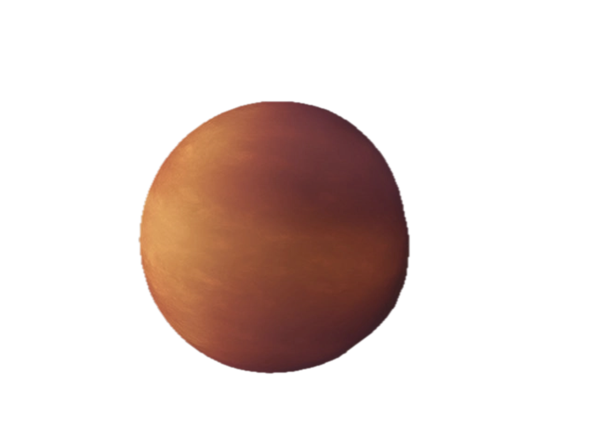

Strange New Worlds
Kepler-90
The first 8-planet system discovered
TOI-178
Six planets dancing in perfect resonance
GJ 667C
Multiple potentially habitable planets

WASP-76b
Iron rain and twilight storms

KELT-9b
Hotter than 75% of stars

Kepler-80f
Possibly denser than diamonds